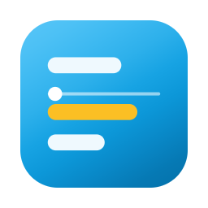

Up NextYour day, always on screen.
A real macOS window that floats above whatever you are working in — translucent, so it does not hide it — showing what is coming and what you still owe people. Nothing to open. Nothing to go and check.
Free and open source, MIT licensed. Apple silicon, macOS Ventura or newer.
The widget, drawn to scale, over an editor it is not hiding. Nobody’s real diary was harmed.
Why not just use the menu bar?
Most calendar apps for the Mac live behind a click. They put an icon up top, and you find out what is next by going and asking. That works right until you are concentrating, which is exactly when it stops working.
It is a window, not a menu
A real panel on the monitor you choose, floating above full-screen apps and present on every Space. It never takes focus, so it cannot interrupt what you are typing.
Your TODO list lives beside it
Tasks sit under the day, added from anywhere with a keyboard shortcut, and roll forward to tomorrow when you do not get to them. Two arrows appear as you hover a task, so the one that actually matters can sit at the top. One glance covers both halves of being on top of your day.
Built for screen sharing
Privacy mode blanks every meeting and task title before you present, and the widget can withhold itself from screen capture entirely.
It talks to nobody
No server, no account, no analytics, no telemetry. Just your Mac and Google, over read-only access it could not use to change anything if it wanted to.
Install
With Homebrew:
brew tap edspressomartini/tap
brew trust edspressomartini/tap
brew install --cask up-nextWithout it, download the latest DMG and drag Up Next to your Applications folder. Homebrew is only worth it for the upgrades; the app is identical either way.
Signed with an Apple Developer ID and notarised by Apple. macOS opens it the way it opens anything else — no trip to System Settings, no override, nothing to click past.
Reviewed and verified by Google. Signing in is the ordinary Google screen — no “unverified app” interstitial, nothing to click past there either.
Apple silicon, macOS Ventura or newer. The security overview covers what the app can reach, what it stores, and how to verify a download before trusting it.
The rest of it
Counts down in the menu bar
The next meeting and how long you have, with no Dock icon cluttering things up. It can show only the countdown if the titles are nobody else’s business.
Writes most of your standup
History lists what you ticked off on previous days, grouped by the day you finished it, so the thing you did on Tuesday is still there on Wednesday morning.
You can still read what is under it
The panel is properly see-through, not a frosted pane that only works against the desktop picture. Put it over an editor and the editor is still there.
Six colour schemes
Pink, lavender, mint, peach, graphite or the original blue, tinting the whole panel rather than a button or two. Light and dark still follow macOS.
Shrinks to fit a laptop
Turn the timeline or the task list off from the title bar. With both off it is just the countdown to your next meeting, small enough for a screen with nothing to spare.
Two accounts at once
Work and personal side by side, or merged into a single stream. Your choice.
Gets you into the call
A nudge shortly before a meeting starts, and one click to open the link.
Tells you what to do when it is empty
Nothing connected yet, or an account that needs signing in again, and the widget puts the button that fixes it right there. An empty task list spells out the shortcut for adding one.
Reads almost nothing
Your events and your list of calendars. No Gmail, no Drive, no Contacts, and no ability to create, edit or delete anything. See the privacy policy.